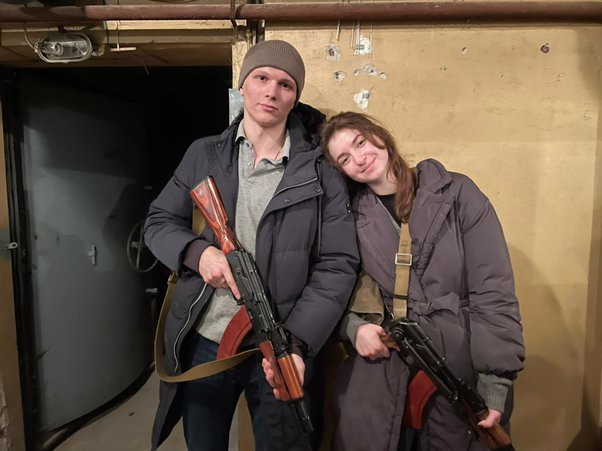
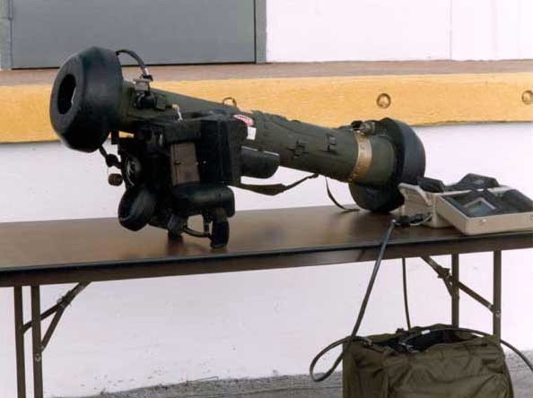

ရုရှား ကျူးကျော်မှုသည် ယခုအချိန်အထိ အောင်မြင်ခဲ့ပါ။
စစ်ရေးစကားပြောအရ ရုရှားတွင် "အချိန်သတ်လိုင်းနောက်ကျခြင်း" ရှိနေသည်။ ကိစ္စရပ်များကို စီစဉ်ထားသလောက် မဖြစ်တော့ဟု ဆိုလိုသည်။ သူတို့သည် မည်သည့်အရေးပါသောမြို့ကိုမဆို ထိန်းချုပ်ရန် ရှိနေဆဲပင်။ သူတို့သည် ကျိုင်းဗ်လေဆိပ်ကို ထိန်းချုပ်ရန် ကြိုးစားနေကြသည်။
ဒီအတောအတွင်း တိုက်ပွဲဝင်ချင်တဲ့ယူကရိန်းနိုင်ငံသားတွေ ပိုများလာ ကြသည်။
ယူကရိန်း သူငယ်ချင်းကတစ်ယောက်က နေ့စဉ်နိုင်ငံသားများ၏လိုင်းများ စက်သေနတ်များကို ကောက်ယူနေသော စစ်ဆေးရေးဂိတ်အများအပြားရှိသည်ဟု ပြောခဲ့သည် ။
ဒီစစ်ဆေးရေးဂိတ်တွေဆီ သွားမယ်ဆိုရင် လူငယ်တွေပဲ ရောက်လာတာ မဟုတ်ပါဘူး။ ဆယ်ကျော်သက်တွေနဲ့ သက်ကြီးရွယ်အိုတွေ ပူးပေါင်းနေကြတယ်။ နောက်မှာနေတဲ့သူတွေဟာ အဆုံးတိုင်အောင် တိုက်ပွဲဝင်နေကြတယ်။
အသက် ၈၀ အရွယ်တောင် စေတနာ့ဝန်ထမ်းဆီ ရောက်လာခဲ့ပါတယ်။
သူက သူ့မြေးတွေကို ကာကွယ်ဖို့ တိုက်ပွဲဝင်ချင်လို့ စေတနာ့ဝန်ထမ်းလုပ်ခဲ့တယ်။
ဇနီးမောင်နှံဟာလည်း ကျူးကျော်တဲ့နေ့မှာ လက်ထပ်လိုက်ကြတယ်။ နိုင်ငံကိုကာကွယ်ရန် ရိုင်ဖယ်သေနတ်များ သယ်ဆောင်လာသည့် အိမ်ထောင်ဦးဆုံးရက်များကို ရွေးချယ်ခဲ့ကြသည်။
ယူကရိန်းနိုင်ငံဘက်မှာ အရမ်းရှုပ်ထွေးတဲ့ လက်နက်တွေ ရှိပါတယ်။
သူတို့သည် အမေရိကန် နှင့် အခြားမဟာမိတ်များထံမှ ထိပ်တန်းထောက်လှမ်းရေး နှင့် အကြံဉာဏ် ရရှိနေသည်။ အမေရိကမှာ အမှားတွေရှိမှာပါ။ ဒါပေမဲ့ စစ်ပွဲကို ဘယ်လိုကွပ်မျက်ရမယ်ဆိုတာ သိကြတယ်။ လေ့ကျင့်မှုတွေ ရှိခဲ့ပါတယ်။
သူငယ်ချင်းအဖေက ၂၀၂၀ ပြည့်နှစ်အထိ ထောက်လှမ်းရေးအတွင်းရေးမှူးအဖြစ် တာဝန်ထမ်းဆောင်ခဲ့ပြီး ယူကရိန်းနဲ့အတူ အလုပ်အများကြီးလုပ်ဆောင်ခြင်းပါဝင်တဲ့ အရေးပါတဲ့ စစ်ရေးဦးဆောင်မှုအခန်းကဏ္ဍများစွာမှာ အမှုဆောင်ခဲ့တယ်။
ရုရှားက ယူကရိန်းကို အနိုင်ရခဲ့လျှင်တောင်မှ၊ သူတို့သည် ကြိုတင်ခန့်မှန်းနိုင်သောအနာဂတ် အတွက် ကြီးမားသော၊ ကပ်ဆိုက်သော ဆုံးရှုံးမှုများ ခံစားရမည်ဟု သူကကျွန်တော့်ကိုပြောခဲ့သည်။ ရုရှားသည် သူတို့ထံ မှ Crimea ကို သိမ်းယူခဲ့ ကတည်းကနှစ်များအတွင်း ယူကရိန်းစစ်တပ်သည် သိသိသာသာတိုးတက်လာခဲ့သည်။
ရုရှားတပ်ဖွဲ့များသည် သူတို့ကျူးကျော်ဝင်ရောက်လျှင် ပြဿနာများလိမ့်မည် ။
ယူကရိန်း၏ စစ်ဘက်ဆိုင်ရာလက်နက်သည် လူအများစုထင်သည်ထက် ပို၍ဖြစ်နိုင်ဖွယ်ရှိသည် ။ ရာနှင့်ချီသောဂျာဗလင်လက်နက်များမှာ ကျိုက်တစ်မြို့တည်းတွင်ရှိသည်ဟု သံသယရှိကြသည်။
၎င်းသည် အထူးသဖြင့်အရေးကြီးသည် အဘယ်ကြောင့်ဆိုသော် သူတို့သည် ရုရှား၏ရွေးချယ်မှု လက်နက် : တင့်ကားများကို ပစ်မှတ်ထားသောကြောင့်ဖြစ် သည် ။
အထက်မှ ပစ်ချလိုက်သည့်အခါ ဂျာဗလင်များသည် အထူးသဖြင့် ထိရောက်မှုရှိသည်။ ကျိုင်းဗ်သည် အဆောက်အအုံကြီးများနှင့် လှုံ့ဆော်ပေးသော စစ်သားများဖြင့် တင်ထားသည်။
သယ်ယူရလွယ်ကူသော ဒုံးကျည်ပစ်ကိရိယာဖြင့် ထိုသူတွေအား ပစ်ခတ်ခွင့်ပြုပြီး ပြန်ပစ်ခတ်လာခြင်းကို အမြန်ရှောင်ရှားကို တွေ့ရသည်။ (သို့မဟုတ် ကိစ္စအတော်များများတွင် တွေ့မြင်ရသည်)။
ကမ္ဘာကြီးက ငြီးငွေ့နေတယ်ဆိုတာ သူတို့သိကြတယ်။
သူတို့ထဲက အများစုက သူတို့အမှန်တကယ် ကျူးကျော်ဝင်ရောက်တိုက်ခိုက်မယ်လို့ မထင်ခဲ့ကြဘူး နောက်ပြီး အတော်များများက သူတို့ရဲ့ လက်တွေကိုချထားခဲ့ကြတယ်။ ယူကရိန်း တံခါးများကို စားနပ်ရိက္ခာ နှင့် လောင်စာဝယ်ယူရန် တောင်းဆိုနေသော စစ်သားများ၏ အစီရင်ခံစာများလည်း ရှိသည်
လက်နက်တစ်ခုဟာ ပိုင်ရှင်တွေ တိုက်ခိုက်ဖို့ ဆန္ဒရှိသလောက်ပဲ အသုံးဝင်ပါတယ်။
ဤအတောအတွင်း ယူကရိန်းနိုင်ငံသားများသည် ယင်းကို တည်ရှိနေသော အကျပ်အတည်းတစ်ခုအဖြစ် ရှုမြင်ကြသည်။
ကျူးကျော်ဝင်ရောက်လာခြင်းသည် ယခုအချိန်ထိ ရုရှားအတွက် ဘေးအန္တရာယ်တစ်ခုဖြစ်ခဲ့သည်ဟု အစီရင်ခံစာများရှိသည်။ ရုရှား လေယာဉ် များ နှင့် ရဟတ်ယာဉ် များ ၏ ပစ်ခတ် မှု ပုံရိပ် များ သည် လူမှုမီဒီယာ တစ်လျှောက် လုံး တွင် ရှိ သည် ။ ရုရှား ယူနီဖောင်း များ ကို လမ်းမ များ တစ်လျှောက် စွန့်ပစ် ခဲ့ သည် ကို တွေ့ ရှိ ခဲ့ သည် ။
ဗိုလ်ချုပ် ပက်ထရီယပ်စ်က "သူတို့ (ရုရှား) ဟာ သူတို့မျှော်လင့်ထားတာထက် ပိုပြီး ခုခံနိုင်စွမ်းနဲ့ ရင်ဆိုင်နေရတယ်"လို့ပြောတယ်။
ဒါကို ကျွန်တော်ရေးခဲ့သလိုပဲ ယူကရိန်းနိုင်ငံက ကျစ်ဗ်မြို့မှာ ဆင်းသက်တော့မယ့် ရုရှားလေယာဉ် ၁၅၀ သယ်ဆောင်လာတဲ့ သယ်ယူပို့ဆောင်ရေးလေယာဉ်တစ်စင်းကို ပစ်ချလိုက်တဲ့ အစီရင်ခံစာတစ်ခု ရောက်လာတယ်။
ရုရှားနိုင်ငံကို ပြန်ရောက်လာတဲ့ ထောင်နဲ့ချီတဲ့သူတွေဟာ လမ်းတွေမှာ ဆန္ဒပြနေကြတယ်။ ဤ ကျူးကျော်မှု တစ်ခုလုံးသည် ပူတင်ကို မျက်နှာသာပေးမှုနှုန်းထားများကို ကူညီရန်ဖြစ်ခဲ့သောကြောင့်၊ အထူးသဖြင့်၊ ၎င်းသည် စိုးရိမ်မှုကို ဖြစ်စေလိမ့်မည်။
ရှင်းရှင်းလင်းလင်းပြောရလျှင် အခြေအနေသည် အရေးတကြီးအရေးပါပြီး နိုင်ငံများသည် ၎င်းတို့၏ ပိတ်ပင်မှုများကို မြှင့်တင်ရန်နှင့် ထောက်ပံ့ပစ္စည်းများ ပိုမိုပေးပို့ဖို့လိုသည်။
SWIFT ပိတ်ပင်မှုတွေကို ရွေးချယ်ထားတဲ့ ဘဏ်တွေမှာ အခု အကောင်အထည်ဖော်နေပါတယ်။ သူ တို့ သည် ရုရှား စီးပွားရေးကို ထိခိုက်စေမည် ဖြစ်သော်လည်း ဤတိုက်ပွဲသည် အလွန်ကြာမြင့်စွာ ဆက်လက်ဖြစ်ပွားနိုင်သည် ။
ဤ ကျူးကျော်မှုကို ဆန့်ကျင် လျက် ကမ္ဘာ တစ်ဝန်း ရှိ လူ များ စုရူး နေ ကြ သည် ကို မြင် ရ ခြင်း သည် လှုံ့ဆော် မှု ဖြစ် ခဲ့ သည် ။ ယူကရိန်းက နိုင်လိုမင်းထက်ပြုဖို့ ကျွမ်းကျင်တဲ့ အတန်းတစ်ခု ပေးနေပါတယ်။
ရုရှား သည် လာ မည့် ရက် များ တွင် ယူကရိန်း ကို ကျော်လွှား နိုင် လိမ့်မည် ဖြစ် ပြီး ၊ အထူးသဖြင့် ၊ ကျစ်ဗ် ဖြစ် နိုင် သည် ။
ခေါင်းဆောင် မှု ကို အဆက်မပြတ် ထိန်းသိမ်း ထား ခြင်း ၊ နှင့် သမ္မတ ဇယ်လင်စကီ ကို အသတ်ခံ ရန် ခွင့်မပြု ခြင်း သည် အလွန် အရေးကြီး သည် ။ သို့သော်လည်း ၊ ဇယ်လင်စကီ အသတ်ခံ ရ ခြင်း သည် ပူတင် အတွက် ကြောက်မက် ဖွယ် ဖြစ် လိမ့်မည် ။
ပူတင် က သူ့ နောက် မှ လုပ်ကြံ သူ များ စေလွှတ် ခဲ့ သော်လည်း ၊ ဇယ်လင်စကီ သည် ရှေ့တန်း တွင် ရပ်နေ ခြင်း နှင့် ပြေး ရန် ငြင်းဆို ခြင်း အတွက် နိုင်ငံတကာ သူရဲကောင်း ကိန်းဂဏန်း တစ် ခု အဖြစ် ပြောင်းလဲ သွား ခဲ့ သည် ။
ဇယ်လင်စကီ သည် ယူကရိန်း တပ်ဖွဲ့ များ ကို နောက်ထပ် လှုံ့ဆော် ပေး သော အာဇာနည် တစ် ဦး ဖြစ် လာ လိမ့်မည် ဖြစ် ပြီး နတ်ဆိုး ပူတင် ကို ဖျက်ဆီး ခဲ့ သည် ။
သမ္မတ ဇီလန်စီ သည် သူ ၏ တပ်ဖွဲ့ များ ဘေး တွင် ရပ်တည် ရန် အင်္ကျီ တစ် ခု ကို တပ်ဆင် နေ စဉ် ပူတင် သည် ဝေးလံ သော မော်စကို ရှိ အပူပေး စားပွဲ တစ် ခု နောက် တွင် ထိုင် နေ သည် ။
ကျိုက်ဗ် လဲကျသွားရင်တောင် ရုရှားစစ်သားတွေကို သိမ်းပိုက်လိုက်ရင်တောင် အရမ်းဆိုးဝါးတဲ့နေရာမှာ ရှိနေပါလိမ့်မယ်။ သောင်းကျန်းမှုတစ်ခုကို ထိန်းချုပ်ရန် လူစွမ်းအား မရှိကြပါ။ ထို နေရာ ရှိ အရပ်သား တိုင်း သည် ၎င်း တို့ ကို ပစ်ခတ် ရန် အခွင့်အရေး များ ရှာဖွေ နေ ကြ လိမ့်မည် ။
ဤစစ်ပွဲ ဆက်လက်ဖြစ်ပွားနေသည်နှင့်အမျှ ကြောက်မက်ဖွယ်သေဆုံးမှုများကို ကြံ့ကြံ့ခံနေရသည့် အပြစ်မဲ့သူများ၏ ပုံရိပ်များ ပိုမိုပေါ်လာပါလိမ့်မည်။ ၎င်း သည် ပူတင် အတွက် ပီအာ ဘေး အန္တရာယ် အားလုံး ၏ မိခင် ဖြစ် လိမ့်မည် ။
လမ်းတွေပေါ်မှာ အဆောက်အအုံတွေ ပြိုကျနေပြီး အလောင်းတွေ ပြိုကျနေတာကို ကျွန်တော်တို့ မြင်ရပါမယ်။ ကလေးတွေ အသတ်ခံရလိမ့်မယ်။ ပူတင် နှင့် ကမ္ဘာ့ စက်ဆုပ် ဖွယ်ရာ သည် သာလျှင် ကြီးထွား လာ လိမ့်မည် ။ ဖြစ်ပျက်ခဲ့တာတွေကို ပြန်မလုပ်နိုင်ပါဘူး။
ဒီပဋိပက္ခကို မြင်နိုင်ဖို့နဲ့ ရှင်းရှင်းလင်းလင်း မြင်နိုင်ဖို့ အရေးကြီးပါတယ်။
သတိရပါ– ပူတင်က ကျူးကျော်ဝင်ရောက်ဖို့ သူ့ရဲ့ရည်ရွယ်ချက်တွေနဲ့ပတ်သက်ပြီး တက်တက်ကြွကြွ လိမ်ညာခဲ့တယ်။ ထို့နောက် သူ တို့ ၏ ကိုယ်ပိုင် ကျူးကျော် မှု သည် နာဇီ-အက်စကီ ထက် ပို ၍ မ ကြည့် နိုင် သောအခါ ၊ " နာဇီဖွံ့ဖြိုး ခြင်း " ၏ အကြောင်းပြ ချက် တစ် ခု ကို ဖွဲ့စည်း ခဲ့ သည် ။
သမ္မတက ဂျူးလူမျိုးဖြစ်တဲ့နိုင်ငံတစ်ခုကို ရှုတ်ချနေတယ်လို့ ပြောရမယ့် ဘောစကားလုံးတွေကို စိတ်ကူးကြည့်ပါ။
ယူကရိန်းမှာ ဘာတွေဖြစ်နေတယ်ဆိုတာ ကြောက်စရာကောင်းတယ်လို့ ခံစားရတယ်။ ရုရှားလူမျိုးတွေရဲ့ အမှားလည်း မဟုတ်ပါဘူး။
ဒါက အစွမ်းထက်တဲ့ လွတ်မြောက်သူတစ်ယောက်အဖြစ် အောက်မေ့ခံရတာကိုပဲ ဂရုစိုက်တဲ့ ဆိုးသွမ်းတဲ့ လူမှုဖူလုံရေး ခေါင်းဆောင်တစ်ယောက်ကြောင့်ပါ။
ကျေးဇူးပြု၍ ပုံပြင်အတုများနှင့် သတင်းများကို စောင့်ကြည့်ပါ။ ရုရှား သတင်း အချက်အလက် စည်းရုံး လှုံ့ဆော် မှု များ သည် ယခု အချိန် တွင် ခြေလှမ်း လှမ်း နေ ပါ သည် ။
ဒါက ပူတင်ရဲ့ အဆုံးကို အမှန်တကယ် စာလုံးပေါင်းဖော်ပြလိုက်ပါတယ်။